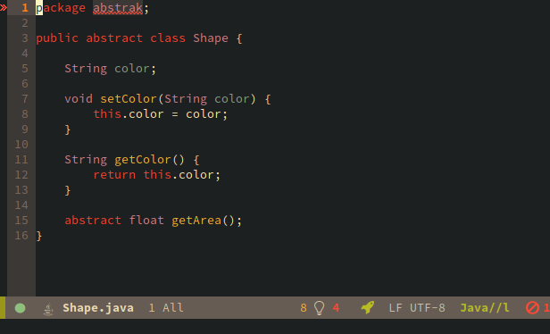
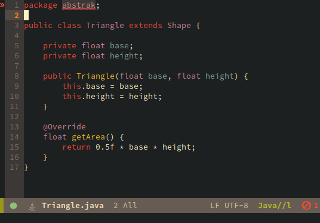
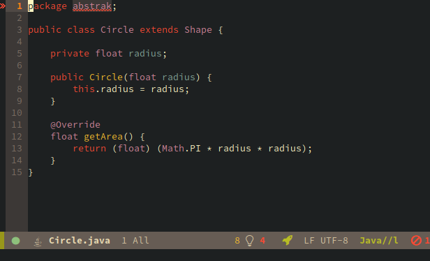
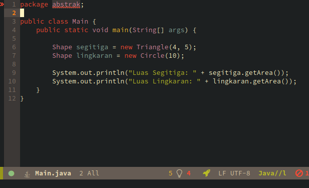
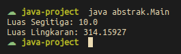

Oleh: Avrilian Briliansyah
Abstract Class adalah class yang berisi variabel dan method, yang bisa digunakan untuk membuat class yang lain. Abstract class sendiri tidak dapat di-inisialisasi menjadi objek.
abstract class Dog {
String breed;
}
Semua class yang diturunkan dari Abstract class tersebut memiliki tipe yang sama yaitu Abstract class tersebut.
Abstract Method adalah method yang dideklarasikan di Abstract Class namun tidak memiliki badan (kode didalam {}). Abstract Method mengharuskan class yang mengextends Abstract Class yang memiliki Abstract Method untuk mengimplementasikannya di class anakan.
Abstract method memiliki keyword abstract sebelum tipe method dan sesudah modifier kalau ada.
abstract class Dog {
String breed;
abstract void poop();
}
Abstract class membantu kita mengorganisasi class. Ia menentukan method apa yang harus ada pada class yang diturunkan dari Abstract class tersebut.
Implementasi Abstract method mungkin berbeda-beda tergantung class. Dan itu sebabnya kita membuat method tersebut abstract.





Class abstrak dan interface sama-sama digunakan untuk membuat abstraksi. Keduanya hampir memiliki sifat yang sama.